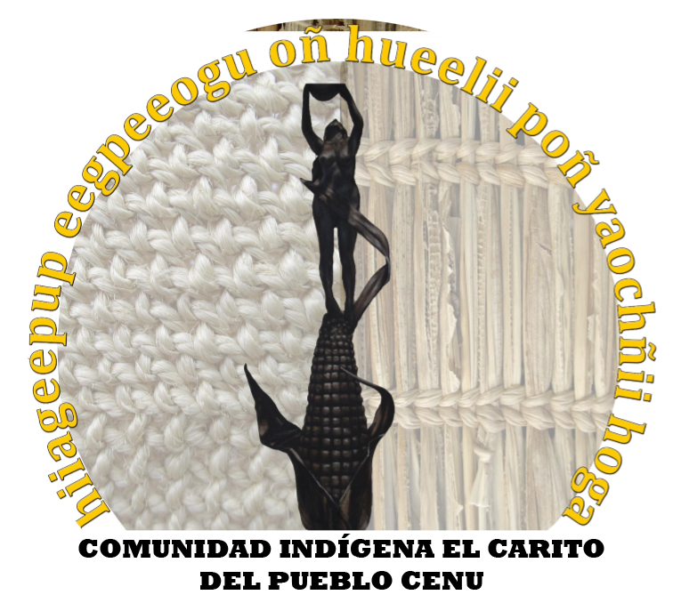

IMPLEMENTACIÓN DE UNA ESTRATEGIA DE COMUNICACIÓN PARA EL FORTALECIMIENTO
DE LA IDENTIDAD CULTURAL DE LA COMUNIDAD INDÍGENA “EL CARITO” DEL PUEBLO ZENÚ

Historia Cenu
Los Cenu o Sinú, fueron una tribu amerindia en Colombia, cuyo territorio ancestral comprende los valles de los ríos Sinú y San Jorge, así como la costa del Caribe en el golfo de Morrosquillo. Estas tierras se encuentran dentro de los departamentos colombianos de Córdoba y Sucre.
La cultura Cenu existió desde alrededor de los años 200 aC a 1600 dC, ellos construyeron grandes obras hidráulicas y produjeron bellos ornamentos de oro. El oro que fue enterrado a menudo con sus muertos atrajo la atención de los conquistadores españoles, quienes saquearon las tumbas en busca del metal precioso. Con la llegada de los españoles, la tribu, sufrió un gran descenso demográfico. Los cronistas españoles del siglo 16, escribieron acerca de los Cenu, que seguían viviendo allí, pero registraron poco o nada sobre la historia del Cenu.
Alrededor del año 200 aC, las comunidades de agricultores y orfebres vivían en los valles del Sinú, San Jorge, Cauca y Nechí, todos relacionados con la cultura, con similares expresiones artísticas, los conceptos de la vida y la muerte, y prácticas ambientales. Sus medios de subsistencia eran la caza, la agricultura, la pesca y comercio de materias primas y productos terminados. Alrededor de 950 d.c. Unos 160 habitantes por kilómetro cuadrado viven en la cuenca San Jorge. Después de 1100, la población Zenú disminuyo por razones desconocidas y se trasladó a los pastos más altos que no necesitaban de obras de drenaje para habitarlos, donde vivieron hasta que la llegada de los conquistadores españoles.
ECONOMÍA DE LOS CENU
Los pobladores de la cultura Cenu se dedicaron a las actividades ganaderas, agrícolas (de gran importancia en los valles que habitaron), pesqueras, de caza (animales salvajes de la selva colombiana) producción de artesanías (cerámicas, cestos de mimbres, sombreros), orfebrería (gran cantidad de objetos bellamente realizados). Existía una división del trabajo por el sexo y la edad. Las actividades como la agricultura, pesca, caza la realizaban los hombres, y las mujeres trabajaban en la confección de artesanías y recolección de alimentos.
ORGANIZACIÓN SOCIAL Y POLÍTICA
Los Cenu eran un pueblo que se organizó políticamente en cacicazgos donde ejercía el poder una sola persona: El CACIQUE que poseía
poderes militares y religiosos, lo que le permitió estar al mando y controlar a la población de un valle. El pueblo Cenu habitó varios valles de los ríos Sinú y San Jorge, así como la costa del Caribe en el golfo de Morrosquillo, es decir, existieron gran número de caciques o gobernantes, sin embargo existía una interdependencia entre las ciudades Cenues ya que las comunidades no eran autosuficientes en la
producción de alimentos y artefactos para la agricultura y el hogar, esto garantizo la estabilidad territorial en la región y la armonía relativa.
SISTEMA DE CANALES DE RIEGO DE CENU
El delta interior formado por el río San Jorge, el río Cauca, el Magdalena y el río Nechí, en el sur-oeste de Santa Cruz de Mompox, con frecuencia se inundaba durante la época de lluvias en las montañas de abril a noviembre, causando grandes molestias a los habitantes de las llanuras. Por lo tanto, a partir de 200 aC estas personas construyeron un sistema de canales que les permitió controlar las inundaciones y hacer grandes áreas prácticas para las viviendas y la agricultura. El sistema se iba ampliado continuamente y cubrió 500.000 hectáreas entre 200 aC y el 1000 d.c., se hallaban en su mayor extensión en la cuenca San Jorge, pero los canales fueron construidos también en la parte baja del Cauca y los ríos Sinú. Los Cenues cavaron canales, a veces hasta de cuatro kilómetros, conectado a los canales naturales. Perpendiculares a estos canales habían pequeños canales de riego que fueron excavados.La tierra que se extrajo por las excavaciones se utilizó para construir a largo de los canales terrazas artificiales, de dos a cuatro metros de altura, en el que construyeron sus casas. Durante la época de aguas altas, los canales llevaron el agua a las zonas de cultivo. Cuando el agua se retiraba, el lodo rico en nutrientes se utilizaba para enriquecer la tierra. Este sistema de gestión del agua se utilizó durante un período de 1.300 años.
Después de la conquista española, el sistema de drenaje, probablemente no funcionaba más, porque los cronistas no hicieron
ninguna mención de él. Aunque el sistema ya ha sido dañados por los pantanos, los patrones de los canales siguen siendo detectables en el paisaje.
Volver A La Página Principal